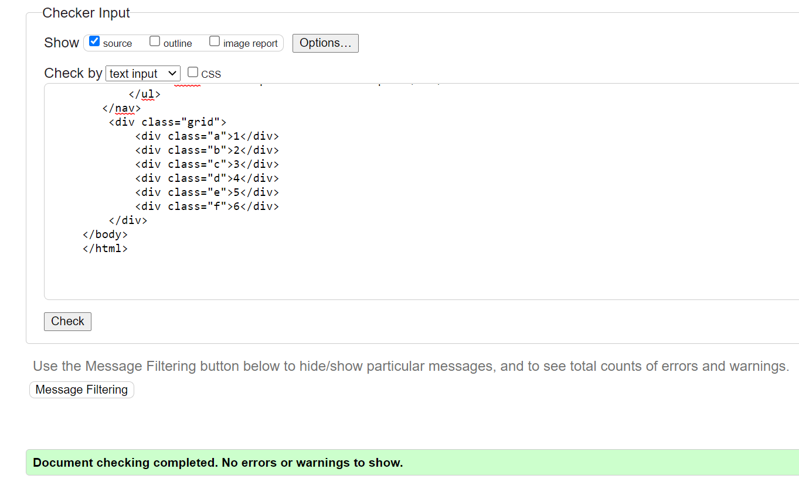
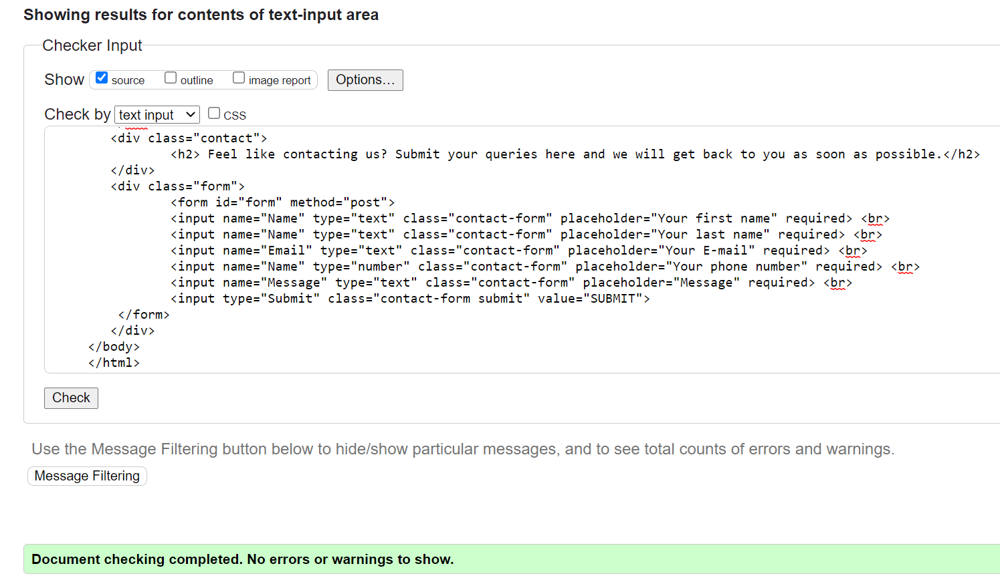

Index Page

Portfolio Page
CV Page

Contact Page

In this report, I will be discussing about my website. I have learnt many new things during doing this assignment.This assignment has looked at several aspects of web development like designing, font and text, background-color, images, different tags and references. I will explain briefly the every aspects of this website.
As you can see form my website, mostly I used two font-family(sans-serif and serif).
And about background color, I choose all the color form W3Schools(HTML Color Picker).
The images I used was all from internet for which I will be referencing it.
All the different tags are used correctly in right places.
My experience was fantastic. It's true that I have to face lots of ups and downs. Like, how a single missing semi colon can waste a lot of time and a single wrong tag can ruin our page. I also faced a little issue at checking validation. Some of my code did not pass the validation check. It was because I was not aware of HTML lang attribute.
To be honest I did not know about HTML lang attribute and when I checked it in browser, It was just for which language are we writing our code but it was necessary to write down.
At first, doing this assignment it was little frustrating, but later it was fun. The plus point was that I got help from my friends. Using all those transition and animation was fun. It was my very first time doing such project. The experience that I got from this project was brand new.
In references, I will be discussing about all the help I got from internet and resources taken form internet.
For the homepage I took a image from the internet. :-The Web consultancy(online). Available from - Background image for homepage. [Accessed date: May 17,2021 ] And also I watched a tutorial video and took a idea from there. Youtube (online) Available from:Coding Nepal-Tutorial.[Accessed date: May 19,2021 ] This is the required link for the tutorial. For all the colors of navbar and text, I used many color one by one and select it. Also I used a hover effect in nav bar.
For the page portfolio, I used CSS grid. :- Pinterest(online). Available from - Portfolio background image. [Accessed date: Jun 2 2021]. I also watched a small tutorial video.Youtube(online). Available from - Web Dev Simplified.[Accessed date: May 25,2021 ] This is the required tutorial link.
In Portfolio page, I used a transition and hover effect for the better look of the page.
For CV, I do it by myself. But I got a little help from my friend. He said to use flex properties to do it. And I do it all by myself. I did not use any background images. I just used lightblue background color for minimalist look.
Contact page was little tough for me. All those input tag,type was little hard for me.So I took help from the internet.Youtube (online).Available from - Towards Web Development.[Accessed date: May 29,2021] In this tutorial, the author used icon and many other things but I made it simple without using any icon. For the background image, I took it from the internet. :- Upperside Immo(online). Available form - Contact page Background Image [Accessed date: Jun 3,2021]
The most fun part of this assignment was to make the site-report. Sharing all those ups and downs, ideas fun was a great experience. The background image was from :- Wallpaper access (online). Available from - Site-report background images[Accessed date: Jun 3,2021]
Hamburger
For hamburger, I used internet. I used two tutorial video. Available from:- Deep Space [Accessed date: May 28,2021 ] Another one avilable from:- JP Web [Accessed date: May 28,2021 ]